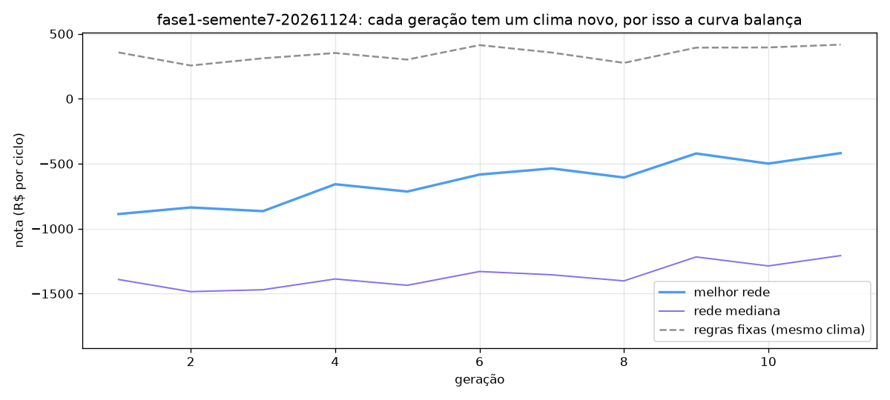
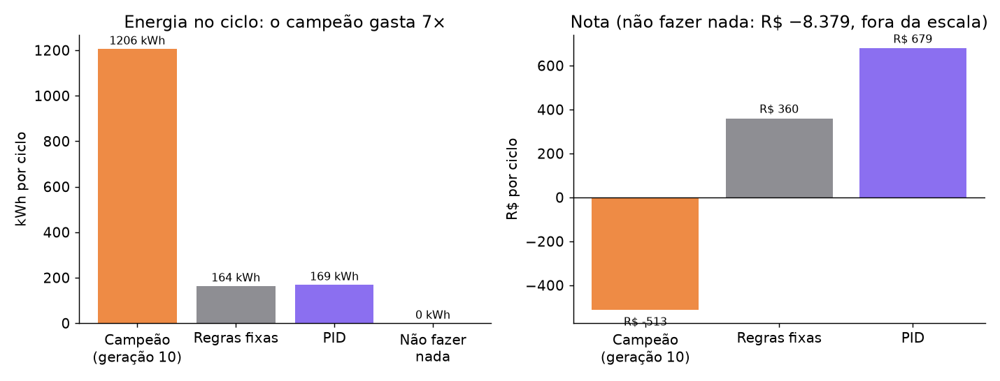

A rede, a neuroevolução e o primeiro ensaio
A MLP 20 → 32 → 32 → 8 controlando mil estufas de uma vez, a evolução escolhendo as melhores, e um ensaio de 11 gerações. O ensaio mostrou que a rede aprende, e também por que o primeiro campeão gastou 7× mais energia.
O que foi feito
treino/rede.py: a MLP, igual à do dashboard (rede.ts): mesmas 20 entradas na mesma ordem, mesma normalização, mesmas 8 saídas, mesma ordem dos 1.992 pesos. Um teste confere a conta neurônio a neurônio.- A rede da população inteira é calculada de uma vez: os pesos são um tensor [P, 1992], e cada estufa é controlada pela sua linha.
treino/evolucao.py, com os quatro passos da evolução, aplicados à população inteira:- elitismo: as 5% melhores passam intactas;
- torneio: para escolher cada pai, sorteia 3 e fica com a melhor;
- cruzamento uniforme: cada peso do filho vem de um dos dois pais;
- mutação: soma um ruído normal de desvio 0,03.
treino/treinar.py, o laço da noite. Tem prova em 10 climas nunca vistos, modelos e gravações no formato do contrato, checkpoint,--retomar,--horas, Ctrl+C que salva antes de sair, e log.treino/relatorio.py: a curva e a tabela da manhã.dashboard/scripts/validar-treino.mjsconfere os JSON contra os esquemas Zod do dashboard; os 6 tipos de arquivo passaram.
Por quê
O roteiro manda escolher a maior população em que uma geração leve até ~60 s. A medição mostrou que o custo quase não depende de P, porque é quase todo sobrecarga do Python a cada passo: P = 256 e P = 1024 levaram ~40 s por geração de 35 dias. A rede inteira custa só 0,07 s por dia simulado. Mais redes saem quase de graça, então ficou P = 1024.
O Combinado põe as 1024 redes e as regras fixas lado a lado, no mesmo clima. A régua de cada geração sai quase de graça, sem uma simulação extra de ~16 s.
A prova roda o campeão, as regras e "não fazer nada" em 10 climas numa simulação só (30 estufas, cada uma com o seu clima), em vez de 30 simulações.
A soma de cada neurônio começa do tamanho de uma entrada: nem morta em zero, nem saturada em ±1.
O checkpoint.pt é lido com weights_only=True: um arquivo adulterado não consegue rodar código.
O ensaio 1 (11 gerações, ~11 min)

| Em 10 climas inéditos | Nota (R$) | Massa por pé | Energia | Fora da faixa |
|---|---|---|---|---|
| Campeão (geração 10) | −513 | 256 g | 1.206 kWh | 65% |
| Regras fixas | 360 | 256 g | 164 kWh | 76% |
| PID | 679 | 273 g | 169 kWh | 54% |
| Não fazer nada | −8.379 | 8 g | 0 | 100% |

O que surpreendeu: toda rede nasce com tudo meio ligado
A saída passa por uma sigmoide, e uma rede sorteada começa com as saídas perto de 0,5. Então toda rede nasce com todos os atuadores ligados pela metade, inclusive o LED de 80 W/m², dia e noite. A evolução está aprendendo a desligá-lo, e por isso a curva sobe, mas sai de muito longe.
Começar o viés das 8 saídas em −2 em vez de 0. A sigmoide de −2 é ~0,12, então cada atuador nasce ligado a ~12%. A arquitetura e o contrato não mudam; é só o valor inicial de 8 dos 1.992 pesos. Depois, um segundo ensaio de 10 min para comparar as curvas.
Outros números
- Tempo por geração: 36 a 56 s. Ficou mais lento quando o envio para a nuvem e outras sessões rodavam junto.
- Uma gravação de 35 dias (5.040 passos) tem ~3 MB, mais que os ~0,5 MB previstos no
nuvem.md, mas cabe no plano grátis. - Uma medição inicial com P = 1024 travou por mais de 9 min. Repetida, levou o mesmo que P = 256. A causa provável foi falta de memória livre naquele momento (2,2 GB de 15,4).
Como reproduzir
.venv\Scripts\python.exe -m pytest treino simulador controle
.venv\Scripts\python.exe -m treino.treinar --horas 0.17 --prova-cada 5 --saidas treino/saidas/ensaio
.venv\Scripts\python.exe -m treino.relatorio treino/saidas/ensaio/fase1-semente7-20261124
cd dashboard; node scripts/validar-treino.mjs ../treino/saidas/ensaio/fase1-semente7-20261124Em aberto
Aplicar (ou não) o viés −2 nas saídas e rodar o ensaio 2.
Depois: a noite (Fase E), com 3 sementes, e o envio para o celular numa janela própria.
Links
- Commits
7dbccc0,7085b2f· branchtreino-fase-d-neuroevolucao treino/rede.py·treino/evolucao.py·treino/treinar.py·treino/relatorio.py